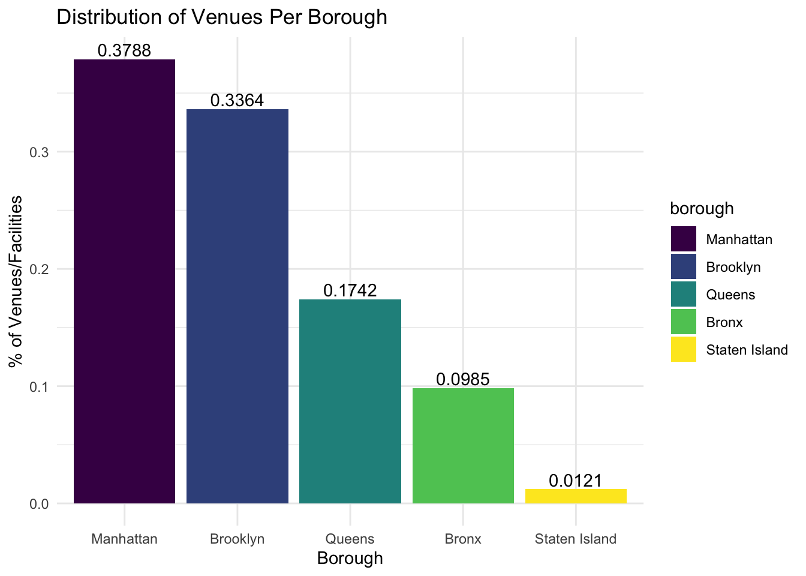

cleaned_data %>%
group_by(borough) %>%
summarize(n = n()) %>%
mutate(
borough = fct_reorder(borough, n, .desc = TRUE)
) %>%
ggplot(aes(x = borough, y = n/sum(n), fill = borough)) +
geom_bar(stat = "identity") +
geom_text(aes(label = round(n/sum(n), 4)), vjust = -0.25) +
labs(
x = "Borough",
y = "% of Venues/Facilities") +
ggtitle("Distribution of Venues/facilities Per Borough")
From the bar plot above, we can see the distribution of venues/facilities across the 5 boroughs. For example, over 2/3 of the total number of facilities are in Manhattan and Brooklyn alone, with Staten Island having the fewest number of facilities that offer free safer sex products (e.g., condoms, lubricants). This is not surprising, however, since Staten Island has a smaller population size.
cleaned_data %>%
group_by(borough, partnertype) %>%
summarize(num_partnertype = n()) %>%
plot_ly(
x = ~borough, y = ~num_partnertype/sum(num_partnertype),
type = "bar",
color = ~partnertype
) %>%
layout(
title = "Distribution of Venue Types in Each Borough",
xaxis = list(title = "Borough"),
yaxis = list(title = "% of Total Venues")
)From the interactive plot above, we can see the distribution of venue types in each borough. For example, it is clear that Brooklyn has many Community-Based Organizations and Non-Profits that offer free safer sex products than the other 4 boroughs. We can also see that the top 3 venues that offer free products across the five boroughs are Businesses, Community Health Centers, and Community-Based Organizations/Non-Profits.